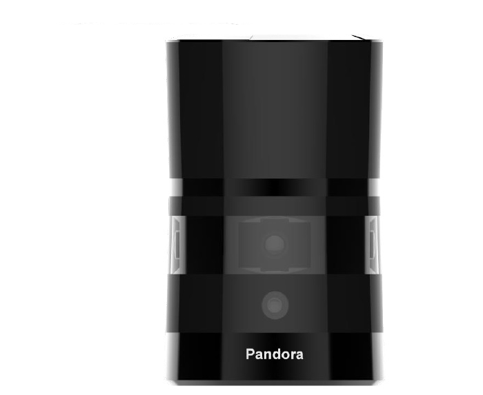
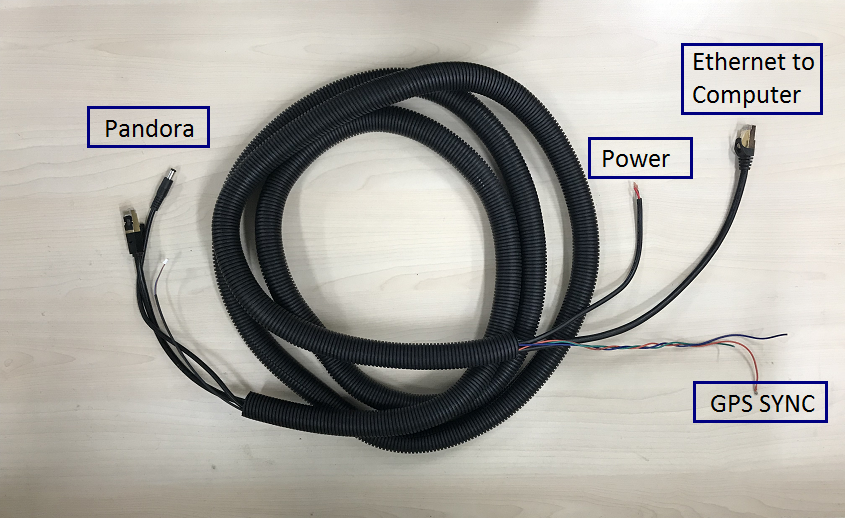

Pandora安装指南
Pandora是一款用于自动驾驶汽车环境感应的一体化传感器套件。 它将摄像头，LiDAR和数据处理能力集成到同一模块中，具有同步和校准解决方案。

安装
Pandora套件需定制的结构才能安装在车辆顶部。该结构必须能为Pandora系统提供刚性支撑，同时在驾驶条件下将Pandora升高到地面以上的某个高度。该高度应保证来自Pandora的激光束不被车辆的前部和/或后部阻挡。Pandora所需的实际高度取决于车辆的设计和其相对于车辆的安装点。在规划安装高度和角度时，请仔细阅读手册以获取更多详细信息。
如果由于某种原因，LiDAR光束必须被车辆阻挡，则在处理接收的数据时可能需要应用滤波器来移除这些点。
布线
每个Pandora都包括一个电缆连接盒和一个相应的电缆束，用于连接电源、计算机（以太网）和GPS时间同步源。

连接电源
请将电源线连接到合适的电源。通常，9~32VDC, 40W 电源应足以为LiDAR供电
连接IPC
使用电缆束中提供的以太网电缆将接口盒连接到IPC。
连接 GPS
Pandora套件需要建议的最小特定GPS /传输数据（GPRMC）和每秒脉冲数（PPS）信号才能与GPS时间同步。需要定制连接以建立GPS接收器和LiDAR之间的通信。有关如何收集这些信号输出的信息，请阅读GPS手册。
在接口盒上，提供GPS端口（SM06B-SRSS-TB）以将GPS信号作为输入发送到LiDAR。 详细的引脚排列如下图所示。
Pin #
Input/output
Comment
1
Input
PPS signal (3.3V)
2
Output
5V power supply to power the GPS Unit if needed
3
Output
GND for external GPS unit
4
Input
RX serial port for GPRMC signal (RS232)
5
Output
GND for external GPS unit
6
Output
TX serial port for external GPS unit
配置
详细的配置步骤可以在Hesai Technologies官方网站上提供的手册中找到。
参考资料
免责声明
该设备由Apollo提供支持